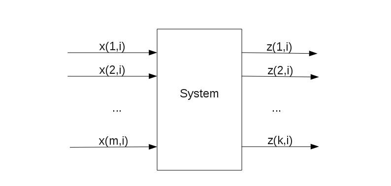
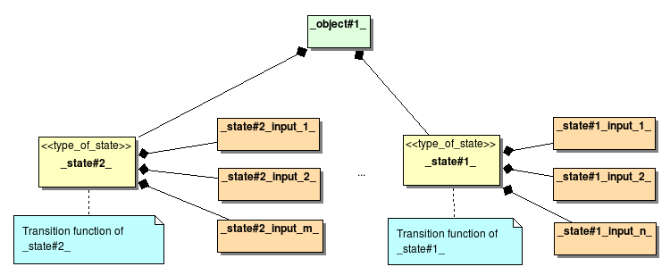
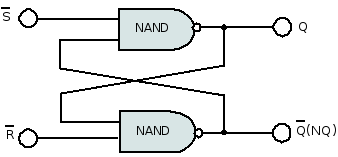
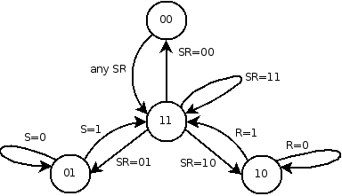
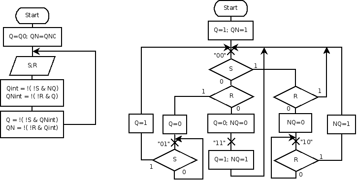
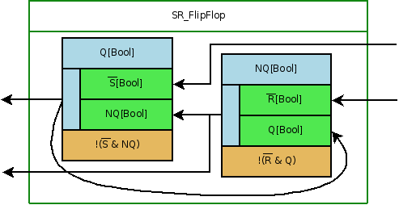

Ver.0.03 at 09-Dec-2010
| Revision History | ||
|---|---|---|
| Revision 0.01 | 10-Mar-2010 | Yuri Borisov |
| Initial version | ||
| Revision 0.02 | 21-May-2010 | Anna Lemekhova |
| Added the section called “Example: SR flip-flop” | ||
| Revision 0.03 | 09-Dec-2010 | Yuri Borisov |
| Added the section called “Examle: Snails” | ||
Table of Contents
References
[SCRAFT_RU_AUTO] http://workbort.ru/auto.shtml.htm. Using of finite automata in SW disign [RU].
[SC_LUBCH_ABP_1] http://www.softcraft.ru/design/katech.shtml. Любченко В.C., Конечно-автоматная технология программирования.
[WIKI_DS] http://en.wikipedia.org/wiki/Dynamical_system. Dynamical system. From Wikipedia, the free encyclopedia.
[WIKI_DDS] http://en.wikipedia.org/wiki/Discrete-time_dynamical_system. Discrete time Dynamical system. From Wikipedia, the free encyclopedia.
[DS_ORG] http://www.dynamical-systems.org/. dynamical-systems.org.
[LYUBCH_RS_TRIG] http://workbort.ru/auto/ka/rsm/rsm01.shtml.htm. Любченко В.С. Искусство программирования ... RS-триггера?! .
[WIKI_RS_TRIG] http://en.wikipedia.org/wiki/Flip-flop_(electronics). Flip-flop (electronics). From Wikipedia, the free encyclopedia.
[WIKI_FSA] http://en.wikipedia.org/wiki/Finite_state_machine. Finite-state machine. From Wikipedia, the free encyclopedia.
[WIKI_AUT_THEORY] http://en.wikipedia.org/wiki/Automata_theory. Automata theory. From Wikipedia, the free encyclopedia.
[CASS_INTR_DES] http://books.tr200.ru/v.php?id=242379. Christos Cassandras, Stefane Lafortune. Introduction to Discrete Event System. .
[FAP_GIT] http://gitorious.org/fap. FAP project git repository.
[FAP_DEMO_SNAILS] http://gitorious.org/fap/fap-snails. FAP demo application "Snails" git repository.
Discrete Time Dynamic System
See Also Discrete Time Dynamic System.
The some phenomenom "black box" model based on input - internal states - output. Ref [WIKI_DS] for base info.
See Also DTDS.
Discrete Dynamic System. One more term for Discrete Time Dynamic System
Discrete Event System - a class of DTDS, discrete state, event driven dynamic system.
Ref [CASS_INTR_DES]
Dynamic System Oriented Model Based Programming
See Also Simulink.
Distributed State Automation.
Finite State automata
Finite Automata Paradigm framework. The framework for SW development with using of FSAparadigm.
Ref [FAP_GIT] for source code repository
The modelling tool of Discrete Dynamic Systems
Discrete time dynamic system (DDS) is one of the paradigms that can be used for SW development.
The key specifics of this paradigm are:
The paradigm has tough relation to concept of FSA.
Let's consider the concept of DDS first. The generic discrete time system can be considered as a "black box" with m input variables x and k output variables z, which value can be changed in the ticks of discrete time i:

Also we can introduce internal variables (states) s(k,i) that determine system behaviour. Discrete time i is unite for the system and "synchronyze" the sets of inputs, outputs and states. So this system can be called "synchronous"
One more resriction is that the set of inputs, states, and output values (alphabet) is finite.
Refer to [WIKI_DDS] section "General definition" for the formal definition.
A discrete time dynamical system can be represented by the tuple (T, S, F, G, X, Z, s0) where,
| T is a discrete time |
| S is a set called state space |
| X is the set of inputs values |
| Z is the set of output values |
| s0 is an initial state of the system |
| G is a function that called "output function" |
| F is a function that called "evolution function" |
Another representation form of DDS is:
In many cases the status s, inputs x, and outputs z can be represented by the vectors:
The element of status will be called "state variable" or "state" below while for the vector s will be term "system state" used
This can be represented by the scheme below:
Ref [WIKI_AUT_THEORY] for WiKi article with math base of FSA
FSA can be considered as a class of synchronous system that is characterised by six-tuple:
G = (X, Y, S, f, g, s0)
where
and
It can be noted that the term "state" is used differently for FSA and DDS: for FSA it often means the element of states set, i.e state value, while for DDS it ofter means "state variable"
Consider SW system design based on DDS representation Figure 1, “DDS scheme”
Basing on representation of whole system state s as a vector of system state elements variables sk, the equation (4) can be written via set of equations for each variable:
where
So the whole system can be factored into the set of particular state variables with assosiated transition functions
Lets also assume that system can be created as a set of subsystems, that can interact one to another, i.e be connected.
As can be seen from the Figure 1, “DDS scheme” each state variables is finite automata where set of state is the set of possible values of state variable, and input events are the state variable inputs values.
Then the whole scheme can be created with two kinds of elements - state variable and object (sybsystem):
Let's illustrate the approach using the examples of systems implementation. To simplify analysis of the examples we can use graphic notation for the object and state.
Graphic notation for the state can be as:

State notation includes:
The scheme of system then consists of states and "links" that connect state to other state depending on it.
In order to simplify object as a syblystem we can separate all the states of the object into three groups:
There was the framework FAP created for the purpose of modelling and analysing DDS paradigm in SW development. Ref [FAP_GIT] for source code repository
Below is the structure and APIs of the FAP libraries outlined:
The structure of system is described by system spec - XML document, that specified the sybsystem and connections between them.
FAP libraries were used for develop examples given in the current article.
Let's illustrate the idea of FSA using with the example - simple application where the race of three snails simulated. The snail in this action does two thinks: moving and eating. The leader in the race gets more food so increases his weigth. But the more weigth is snail, the less velocity he moves.
Let's simulate state by the subsystem, containing state variables for the weight and coordinate on race-track.
The whole system includes three snails and connection between them. The diagram below shows the system structure for two snails.
Let's create FAP spec for the system:
Example 1. Snails spec
<caeenv> <object type="test" id="main_test"> <!-- *************************** SNAIL BASE ******************************* --> <object type="none" id="snail" quiet="yes"> <logspec event="cre"> <logdata id="new"/> </logspec> <state type="StUint32" id="mass" access="Inp" transf="trans_mass" init="2"> <logspec event="upd"> <logdata id="new"/> </logspec> <inp id="coord_self"/> <inp id="coord_others.*"/> </state> <state type="StUint32" id="coord" len="4" access="Out" transf="trans_coord" init="0"> <logspec event="upd"> <logdata id="cur"/> <logdata id="new"/> </logspec> <inp id="self"/> <inp id="mass"/> </state> <conn state="mass"> <dep inp="coord_self" conn="coord"/> </conn> <conn state="coord"> <dep inp="self" conn="coord"/> <dep inp="mass" conn="mass"/> </conn> </object> <!-- snail --> <!-- *************************** SNAIL INSTANCES ******************************* --> <object type="snail" id="snail_1" > <state mut="Change" id="mass" init="7"/></object> <object type="snail" id="snail_2" > <state mut="Change" id="mass" init="3"/></object> <object type="snail" id="snail_3" > <state mut="Change" id="mass" init="16"/></object> <!-- *************************** CONNECTIONS ******************************* --> <conn state="snail_1.mass"> <dep inp="coord_others.1" conn="snail_2.coord"/> <dep inp="coord_others.2" conn="snail_3.coord"/> </conn> <conn state="snail_2.mass"> <dep inp="coord_others.1" conn="snail_1.coord"/> <dep inp="coord_others.2" conn="snail_3.coord"/> </conn> <conn state="snail_3.mass"> <dep inp="coord_others.1" conn="snail_1.coord"/> <dep inp="coord_others.2" conn="snail_2.coord"/> </conn> </object> <!-- test --> </caeenv>
We also can implement transition functions for snail coordinate and mass:
Example 2.
void update_mass(CAE_Object* /*aObject*/, CAE_State* aState)
{
CAE_TState<TUint32>& self = (CAE_TState<TUint32>&) *aState;
const TUint32& coord_s = self.Inp("coord_self");
TInt feed = KMaxFeed;
for (TInt i = 1; self.Input("coord_others", i) != NULL; i++) {
const TUint32& coord_o = self.Inp("coord_others", i);
if (coord_o > coord_s && feed > 0)
feed--;
}
TUint32 newmass = ~self + feed - 1;
self = (newmass > KMass_Max) ? KMass_Max: ((newmass < KMass_Min) ? KMass_Min : newmass);
}
void update_coord(CAE_Object* /*aObject*/, CAE_State* aState)
{
CAE_TState<TUint32>& self = (CAE_TState<TUint32>&) *aState;
const TUint32& mass_s = self.Inp("mass");
self = ~self + KMass_Max/mass_s;
}
And finally we create automata environment, and run the automata time
iEnv = CAE_Env::NewL(NULL, tinfos, KSpecFileName, 1, NULL, KLogFileName);
The source code of application can be accessed on repository [FAP_DEMO_SNAILS]
Lets simulate work of SR flip-flop [WIKI_RS_TRIG] using DDS.
It is possible to construct SR flip-flop using either two NOR or two NAND gate.
The SR NAND gate latch:

The boolean formula:
| Q = !(!S & NQ) |
| NQ = !(!R & Q) |
R (reset) and S (set) are known as external inputs. Q is known as external output and NQ is its inverse output. There is feedback from each output to one of gate inputs. The problematic of SR flip-flop programming is related to these feedback, as additional synchronization actions to perform calculation are required.
When having initial input values at t=t0 (Q(t0)=Q0, NQ(t0)=NQ0, S(t0)=S0, R(t0)=R0), the next step results at t=t1 can be obtained after applying boolean NAND operation twice:
| Step 1: | Qint = !(!S0 & NQ0) | Step 2: | Q1 = !(!S0 & NQint) |
| NQint = !(!R0 & Q0) | NQ1 = !(!R0 & Qint) |
Generally there are four possible combinations of (Q, NQ). But from trigger point of view only (0,1) and (1,0) are correct. They are known as stable states (state (Q1, NQ1)). (1,1) is an intermediate (Qint, NQint) unstable state. All transitions between stable states are performed through intermediate state. This is push-pull (in-out) trigger scheme. The diagram below [LYUBCH_RS_TRIG] describes the process and conditions of states switching:

In [LYUBCH_RS_TRIG] the pros and cons of several SR flip-flop models are described, among them there are sequential flowchart model, parallel synchronous FSA model (our FAPWS is exactly such case) and asynchronous Petri net model. It will take time and efforts for an uninformed reader to investigate all these schemes and graphs. Petri net is far-fetched here, of course it is more suitable for asynchronous systems. So it makes no sense to evaluate it.
When having no additional tools (except C or C++) I would choose sequential variant with explicit intermediate state (SIS) or "if" sequential option [LYUBCH_RS_TRIG]:

Digression. Some simplification can be made:
In this case we don't need NQ at all, Q is defined by S, R and previous Q. But this is another model.
Q1 = !(!S0 & NQint) = !(!S0 & (!(!R0 & Q0))) = S0 | !R0 & Q0
But having such tool as FAPWS library, I would prefer it. The reasons are the following:
| (Q0,NQ0)=(1,0) SR_1= 01, 01, 01, 01, 01, 01, 01, 01, 10 |
| FAPWS: (1,0) 01 -> (1,1) 01 -> (0,1) 01 -> (0,1) 10 -> (1,1) 10 -> (1,0) 10 |
| SIS: [(1,0) 01 -> (1,1) 01 -> (0,1) 01] -> [ (0,1) 01 -> (0,1) 01] 7 times -> [(0,1) 10 -> (1,1) 10 -> (1,0) 10] |
| (Q0,NQ0)=(1,0) SR_2 = 01, 10 |
| FAPWS: (1,0) 01 -> (1,1) 10 -> (1,0) 10 - state is missed here |
| SIS: [(1,0) 01 -> (1,1) 01 -> (0,1) 01] -> [ (0,1) 10 -> (1,1) 10 -> (1,0) 10] |
The SR DDS notation:

The conclusion is that DDS and its realization FAPWS library can be useful (and simplify our life) even in such a trivial example as SR flip-flop.